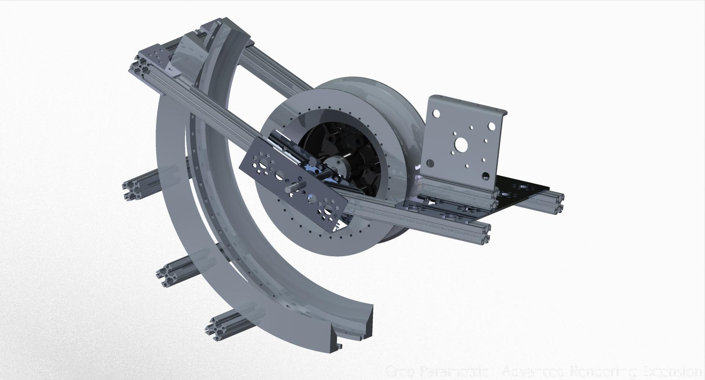

Our work on the flywheel design has been an effective proof of concept, and now we need to work it in to the rest of the robot. However, just like with the catapult, there’s a couple issues to iron out before all the pieces can start moving in a way that doesn’t make the robot implode.
Most notably to the 3D modeler in me, I fear that our current rails which we use to guide the ball as it is sped along by the flywheel might get caught on the rubber bands of the belt which collects the balls. Both ends of the rail have sharp angles which can easily catch on the bands, and it doesn’t really help that the flexible nylon of the rails means that a rubber band that is particularly stubborn in releasing it could turn our launching system back into a catapult of sorts again.
The fix was quite simple: I used Creo to take out the piece of the rail which ran the greatest risk of being caught, and got rid of some extra bolt holes too since I happened to be in the neighborhood.
Not much to report on this one. We’ve printed and tested the model with no catches, and it also seems that the changes to the rail have had no effect on the speed or accuracy with which we can fire the ball. Overall, this one was a simple success.